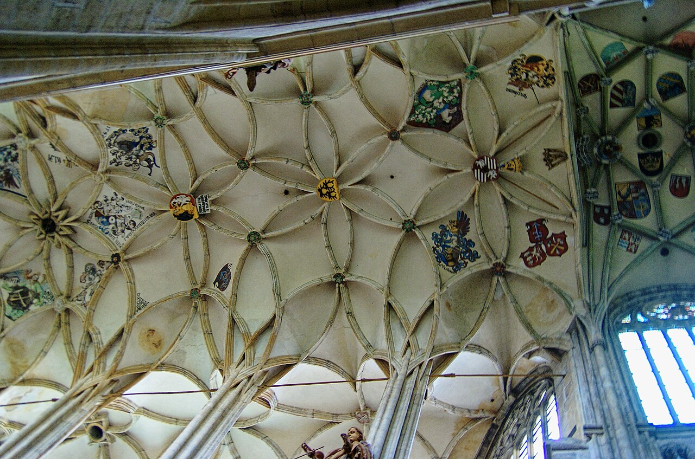

티라나 슈코더르
일반- 수단
- 버스 · 시외버스·푸르곤(수시)
- 소요
- 약 2시간
- 환승
- 직행
약 2시간.
공항 도시에서 첫 숙박지까지의 이동입니다.
발칸 · 숨겨진 소도시
Komani Lake – Valbona – Theth
협곡 호수를 배로 건너 발보나에서 고개를 넘어 테스로. 해외 트레커들의 필수 코스.

.jpg?width=960)
.jpg?width=960)
슈코더르에서 새벽 버스로 코만 호수에 가 페리로 협곡을 건너 발보나에 묵습니다. 다음 날 해발 약 1,800m 고개를 6~9시간 걸어 테스 마을로 넘어가고, 블루아이·폭포를 본 뒤 티라나로 돌아옵니다.


지도: © OpenStreetMap 기여자
현지 6박 7일 · 슈코더르 2박 → 발보나 2박 → 테스 2박
도착 인천 → 티라나 공항 → 슈코더르 (버스 약 2시간). 도착일은 숙소 주변 위주로 가볍게.
로자파 성 일몰 → 콜 이드로메노 보행자 거리 → 마루비 사진 박물관.
숙박: 슈코더르
자전거로 호숫가 마을 → 메시 다리(오스만 석교).
숙박: 슈코더르
이동 슈코더르 → 발보나 · 배 약 5시간 30분 확인
새벽 버스로 코만 → 코만 호수 페리(협곡 사이 약 2시간 30분) → 피에르제 → 미니버스로 발보나 계곡 게스트하우스.
페리는 대체로 4~10월 운항. 숙소에 묶음 예약을 부탁하세요.
숙박: 발보나
발보나 강변 산책, 다음 날 고개 넘기를 위해 쉬기.
숙박: 발보나
이동 발보나 → 테스 · 도보 트레킹 약 7시간 30분 확인
발보나 고개(해발 약 1,800m)를 넘어 테스까지 6~9시간 트레킹. 게스트하우스 저녁.
물·간식·방수 재킷 필수. 짐은 말이나 숙소 운반 서비스를 이용할 수 있습니다.
숙박: 테스
블루아이(테스) 왕복 하이킹 → 그룽 폭포 → 은신 탑(Lock-in Tower) → 테스 교회.
숙박: 테스
이동 테스 → 티라나 · 셔틀 약 4시간 30분 확인 필요
테스에서 티라나(으)로 이동해 출국합니다. 이동 시간에 공항 수속 2~3시간을 더해 항공편을 고르세요. 귀국편은 대부분 다음 날 한국에 도착합니다.
약 2시간.
공항 도시에서 첫 숙박지까지의 이동입니다.
새벽 버스로 코만 선착장 → 페리 약 2시간 30분 → 피에르제에서 미니버스. 대체로 4~10월만 운항.
12~20km, 6~9시간. 6~9월 권장. 눈이 남은 시기에는 위험합니다.
테스–슈코더르 미니버스는 숙소에서 예약합니다. 산길 포장 공사 상황에 따라 시간이 달라집니다.
마지막 숙박지에서 출국 공항 도시까지의 이동입니다.
국경 알바니아 한 나라 안에서만 움직입니다.
이스탄불·비엔나·프랑크푸르트·뮌헨 등에서 1회 경유.
7·8·9월
11~4월(폭설, 코만 페리 운항 중단)
코만 페리는 대체로 4~10월에만 운항합니다. 고개는 6~9월이 안전합니다.

.jpg?width=960)
.jpg?width=960)
중기(6~7박) · 1개국 · 추천 5·9월
프라하 다음 체코. 관광객이 적은 바로크 대학 도시와 와인 지대를 기차로 돕니다.



중기(5~6박) · 1개국 · 추천 4·5·10월
온천 콜로네이드와 필스너 맥주의 고향을 도는 체코 서쪽 일주.


중기(6~7박) · 1개국 · 추천 6·7·8월
부다페스트만 보고 떠나기 아쉬운 사람을 위한 와인 마을과 호수 휴양.


중기·장기(7~8박) · 2개국 · 추천 7·8·9월
비엔나로 들어가 슬로바키아를 기차로 가로질러 타트라 산을 걷고 부다페스트로 나오는 코스.
정보 확인일 2026-11-21